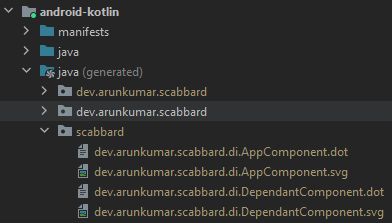

Scabbard¶

A tool to visualize and understand your Dagger 2 dependency graph.
More advanced examples.
Features¶
-
Visualize entry points, dependency graph, dagger errors, component relationships and scopes in your Dagger 2 setup.
-
Minimal setup - Scabbard's Gradle plugin prepares your project for graph generation and provides ability to customize graph generation behavior.
-
IDE integration - Easily view a
@Componentor a@Subcomponnetgraph directly from source code via gutter icons (IntelliJ/Android Studio). -
Supports both Kotlin and Java.
-
Supports Dagger Hilt and Anvil
What's new
Recent additions include support for Dagger Hilt, Anvil, Open SVGs in browser and visualizing missing binding errors from Dagger.
For more details, see Releases.
How it works?¶
Scabbard gradle plugin registers a Dagger SPI plugin to your project and during build it generates graph images based on your dagger setup.
An IntelliJ/Android Studio plugin is also provided that links the generated file to editor for fast access.
Getting Started¶
Requirements¶
Scabbard uses GraphViz to generate graphs and hence requires dot command to be available for it to work.
Installation instructions¶
Install via homebrew.
brew install graphviz
Install via apt.
sudo apt-get install graphviz
Install via GraphViz installer or with Chocolatey by
choco install graphviz
After installation, verify installation by executing dot -V, example:
dot - graphviz version 2.38.0 (20140413.2041)
Installation¶
Scabbard has two major components:
- Scabbard Gradle Plugin - Configures project to generate Dagger images during build.
- Scabbard IntelliJ Plugin (Optional) - Helps to link the generated images back to editor via gutter icons/error logs.
Gradle Plugin¶

Sample PR to add Scabbard to a project: https://github.com/arunkumar9t2/scabbard-sample/pull/1/files
Using the plugins DSL:
plugins {
id "scabbard.gradle" version "0.5.0"
}
plugins {
id("scabbard.gradle") version "0.5.0"
}
or if you are using older versions of Gradle:
buildscript {
repositories {
maven {
url "https://plugins.gradle.org/m2/"
}
}
dependencies {
classpath "gradle.plugin.dev.arunkumar:scabbard-gradle-plugin:0.5.0"
}
}
apply plugin: "scabbard.gradle"
buildscript {
repositories {
maven {
url = uri("https://plugins.gradle.org/m2/")
}
}
dependencies {
classpath("gradle.plugin.dev.arunkumar:scabbard-gradle-plugin:0.5.0")
}
}
apply(plugin = "scabbard.gradle")
After applying the plugin, configure the plugin by adding a scabbard block:
scabbard {
enabled true
}
scabbard {
enabled = true
}
Configuring Scabbard for multi-module projects
For multi-module projects, apply Scabbard plugin in root project's build.gradle file. Doing so will let the plugin configure all subprojects for graph generation.
In root build.gradle file:
apply plugin: "scabbard.gradle"
scabbard {
enabled true
outputFormat "svg"
}
apply(plugin = "scabbard.gradle")
scabbard {
enabled = true
outputFormat = "svg"
}
Success
That's it. Now after building the project, Scabbard would have generated dot and (png or svg) files for your Dagger components in your build folder. The default output directory is location defined by StandardLocation.SOURCE_OUTPUT.
- Java :
build/generated/sources/annotationProcessors/java/$sourceSet/scabbard - Kotlin :
build/generated/source/kapt/$sourceSet/scabbard/
In IDE, the generated images can be found as part of java (generated) source set.

Android Studio/Idea Plugin¶

Scabbard also ships an IDE plugin to open generated images directly from your source code via gutter icons. Please install plugins from File > Preferences/Settings > Plugins > Market Place > Search for "Scabbard" > Install and Restart.
Alternatively you could download the plugin zip file directly from releases and install via File > Preferences/Settings > Plugins > Gear ⚙ > Install from Disk and point to zip file.
Success
The plugin should automatically add an icon next to @Component, @Subcomponent, @Module or @ContributesAndroidInjector as soon as project is indexed.
Other build systems¶

Scabbard at its core is just an annotation processor and as long as it is available alongside Dagger in the classpath, it should generate images. For configuring other build systems, please see setup guide.
Resources¶
License¶
Copyright 2020 Arunkumar
Licensed under the Apache License, Version 2.0 (the "License");
you may not use this file except in compliance with the License.
You may obtain a copy of the License at
http://www.apache.org/licenses/LICENSE-2.0
Unless required by applicable law or agreed to in writing, software
distributed under the License is distributed on an "AS IS" BASIS,
WITHOUT WARRANTIES OR CONDITIONS OF ANY KIND, either express or implied.
See the License for the specific language governing permissions and
limitations under the License.